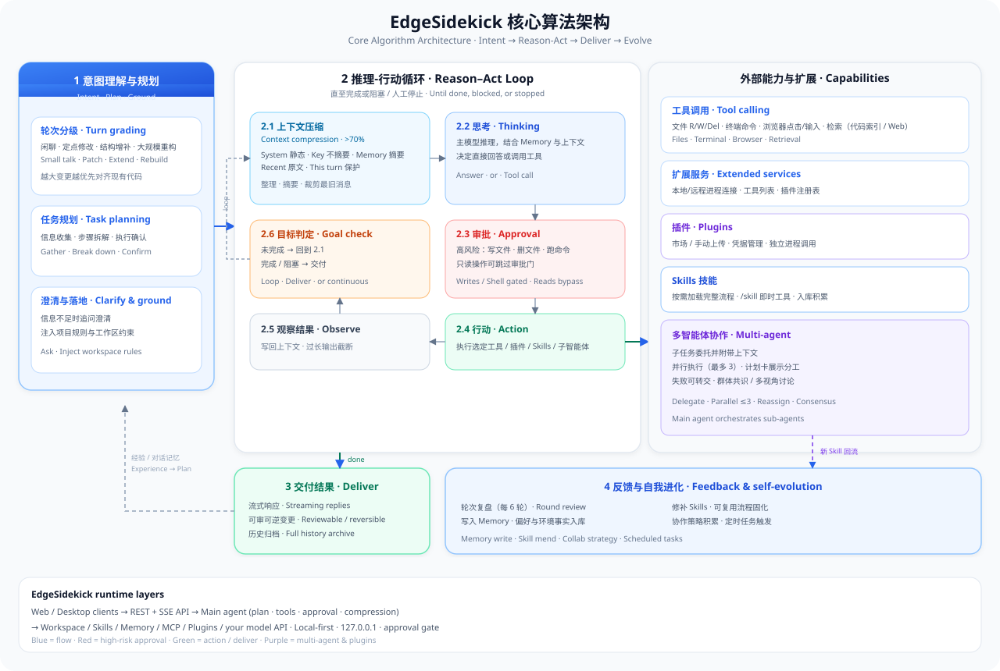

Features

浅色工作台LIGHT

深色工作台DARK
功能与架构
从工作区到多智能体、模型、桌面端与扩展能力的完整说明。
核心架构
客户端、后端智能体运行时与本地磁盘分层清楚，便于二开与本机部署。

Web / 桌面 → REST+SSE API → 主智能体（规划、工具、审批、压缩）→ 工作区 / Skills / Memory / 你的模型 API。
核心能力
WORKSPACE
工作台与工作区
打开本地文件夹作为工作区。SSE 流式对话、附件、停止 / 编辑重发、内容搜索，以及与工作区文件联动的详情面板。
AGENTS
多智能体协作
主智能体编排子智能体：单人回答、并行分工、接力流水线或多视角讨论；计划卡展示分工，失败可转交。
MODELS
模型与密钥
主模型 / 子智能体 / 压缩模型可分开配置。自备 OpenAI 兼容、DeepSeek、Ollama 等 API；密钥本机加密存储。
BROWSER
浏览器沙盒
桌面 Electron BrowserView 实况预览；Web 端 Playwright。Select Mode 点选 DOM，Agent 使用 browser_* 工具。
EXTEND
Skills · MCP · 插件
技能包按需 /skill 调用；设置中连接 MCP；插件市场安装扩展（独立进程，写操作需确认）。
DESKTOP
桌面端与本地优先
Windows / 麒麟安装包或 start-desktop.bat。历史、Memory、配置均在本机磁盘；默认仅绑定 127.0.0.1。
本机默认安全
- 仅绑定 127.0.0.1
- 本地令牌鉴权（X-Sidekick-Token）
- 模型 API Key 加密存储
- Shell / 写文件走审批门
常用斜杠命令
/help · /new · /clear · /skills · /skill <name> · /memory · /history · /browser · /stop
上手流程
01
打开工作区
选择本地文件夹；历史与 Memory 落在你控制的磁盘。
02
配置模型
设置主 / 子 / 压缩模型与 API Key，或接入 Ollama。
03
对话与确认
写文件、Shell、记忆等变更先征求批准再执行。
04
按需扩展
挂载 Skills、浏览器沙盒、MCP 与插件。
界面预览